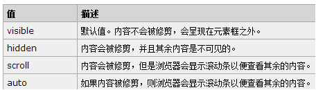

1. 每个块级元素默认占一行高度，一行内添加一个块级元素后无法一般无法添加其他元素 （float浮动后除外）;2. 两个块级元素连续编辑时，会在页面自动换行显示。块级元素一般可嵌套块级元素或行内元素 ;常见块级元素： <1> div - 常用块级容易，也是css layout的主要标签 <2> dl - 定义列表 <3> h1 - h6 标题标签 <4> hr - 水平分隔线 <5> menu - 菜单列表 <6> ol - 排序表单 <7> p - 段落 <8> table - 表格 <9> ul - 非排序列表
1. 也叫内联元素、内嵌元素等；行内元素一般都是基于语义级(semantic)的基本元素， 只能容纳文本或其他内联元素，常见内联元素 “a”； 2.默认不换行，设置高度、宽度 不起作用，但是可以通过 display:block; 升级为块级元素 常见的行内元素： a - 锚点 b - 粗体(不推荐) br - 换行 em - 强调 i - 斜体 img - 图片 input - 输入框 label - 表格标签 select - 项目选择 span - 常用内联容器，定义文本内区块 strong - 粗体强调 sub - 下标 sup - 上标 textarea - 多行文本输入框 u - 下划线
<sub>标签和<sup>标签的应用
This text contains subscript
This text contains superscript
<i><em>行内标签的应用这是斜体字
1. 将窗体自上而下分成一行行, 并在每行中按从左至右的顺序排放元素,即为文档流 ; 2. CSS的定位机制有3种：普通流、浮动和定位 ; 3. 文档流：从上到下，从左到右，一个挨一个的简单或者叫正常布局 ; 4. 定位：（position） Static：保持文档流 ; Relative：相对本身的原始位置发生位移且保持文档流，占空间 ; Absolute：脱离文档流，不占空间且相对于其包含块来定位 ; 5. 浮动：（float）脱离文档流，不占空间 ; 6. 以前总是觉得position：static这个属性很多余，它的作用就是让元素保持文档流的;
1. none - 此元素不会被显示 ; 2. block - 显示为块级元素，此元素前后会带有换行符 ; 3. inline - 默认 , 此元素会被显示为内联元素，元素前后没有换行符 ;
1. overflow 属性规定当内容溢出元素框时发生的事情 ; 2. 这个属性定义溢出元素内容区的内容会如何处理。如果值为 scroll，不论是否需要用户代理都会提供 一种滚动机制 ; 3. 有可能即使元素框中可以放下所有内容也会出现滚动条 ; 